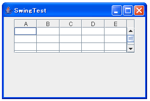
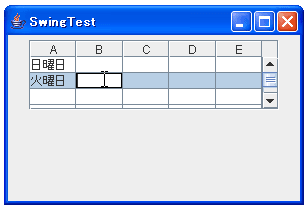

コンストラクタ
コンストラクタは7つ用意されています。
| コンストラクタ |
|---|
| JTable() デフォルトデータモデル、デフォルト列モデル、およびデフォルト選択モデルで初期化される、デフォルトの JTable を構築します。 |
| JTable(int numRows, int numColumns) DefaultTableModel を使用して、空のセルの numRows と numColumns で JTable を構築します。 |
| JTable(Object[][] rowData, Object[] columnNames) 2 次元配列 rowData の値を表示する JTable を、列名 columnNames で構築します。 |
| JTable(TableModel dm) データモデル dm、デフォルト列モデル、およびデフォルト選択モデルで初期化される JTable を構築します。 |
| JTable(TableModel dm, TableColumnModel cm) データモデル dm、列モデル cm、およびデフォルト選択モデルで初期化される JTable を構築します。 |
| JTable(TableModel dm, TableColumnModel cm, ListSelectionModel sm) データモデル dm、列モデル cm、および選択モデル sm で初期化される JTable を構築します。 |
| JTable(Vector rowData, Vector columnNames) Vectors の Vector の値を表示する JTable、つまり rowData を、列名 columnNames で構築します。 |
2番目のコンストラクタは行(row)と列(column)の数だけを指定してJTableを作成します。3番目、7番目のコンストラクタは初期データを与えてJTableを作成します。4番目から6番目のコンストラクタはテーブルのデータを別に管理する場合ですが、こちらは別のページで詳しく見ていきます。
行と列だけ与えてJTableを作成する場合
先ほどの2番目のコンストラクタを使う場合です。まずコンストラクタの中身を見てみます。
JTable public JTable(int numRows, int numColumns)
DefaultTableModel を使用して、空のセルの numRows と numColumns で JTable を構築します。列は、「A」、「B」、「C」といった形式の名前を持ちます。 パラメータ: numRows - テーブルが保持する行数 numColumns - テーブルが保持する列数
DefaultTableModelは後ほど詳しく見ていきますが、テーブルのデータを管理しているものです。このコンストラクタでは行と列の値だけを指定して、データの中身は空のままでJTableを作成します。
一応サンプルで試してみましょう。
import javax.swing.*;
import java.awt.event.*;
import java.awt.BorderLayout;
import java.awt.Dimension;
public class SwingTest extends JFrame{
public static void main(String[] args){
SwingTest test = new SwingTest("SwingTest");
test.setDefaultCloseOperation(JFrame.EXIT_ON_CLOSE);
test.setVisible(true);
}
SwingTest(String title){
setTitle(title);
setBounds( 10, 10, 300, 200);
JTable table = new JTable(8, 5);
JScrollPane sp = new JScrollPane(table);
sp.setPreferredSize(new Dimension(250, 70));
JPanel p = new JPanel();
p.add(sp);
getContentPane().add(p, BorderLayout.CENTER);
}
}
実行結果は下記のようになります。

このコンストラクタの場合は列名が順に"A"、"B"と付けられていきます。また各セルはデフォルトでは編集可能になっていますので、自分で値を入力することもできます。

テーブルの初期値を与えてJTableを作成する場合
では今度はテーブルの初期データを与える場合です。初期データに含まれるデータかた列と行の数が決まります。
JTable public JTable(Object[][] rowData, Object[] columnNames)
2 次元配列 rowData の値を表示する JTable を、列名 columnNames で構築しま す。rowData は行の配列なので、行 1、列 5 に位置するセルの値は次のコード で取得できます。 rowData[1][5]; すべての行は、columnNames と同じ長さになる必要があります。 パラメータ: rowData - 新しいテーブルのデータ columnNames - 各列の名前
データの指定の仕方は、各列の名前(一番上に表示される)の配列と、テーブルの中身の配列で指定します。テーブルは表形式ですので実際の値は二次元の配列になります。
rowDataの部分の配列のデータの指定の仕方は下記のようになります。
String[][] tabledata = {
{"列1のデータ", "列2のデータ", "列3のデータ"}, /* 1行目 */
{"列1のデータ", "列2のデータ", "列3のデータ"}, /* 2行目 */
{"列1のデータ", "列2のデータ", "列3のデータ"}, /* 3行目 */
{"列1のデータ", "列2のデータ", "列3のデータ"} /* 4行目 */
};
初期データの指定方法として配列ではなくて、Vectorで指定する方法もありますので、こちらも見ておきましょう。
JTable public JTable(Vector rowData, Vector columnNames)
Vectors の Vector の値を表示する JTable、つまり rowData を、列名 columnNames で構築します。rowData に格納された Vectors は、その行の値を保持する必要 があります。つまり、行 1、列 5 に位置するセルの値は次のコードで取得できます。 ((Vector)rowData.elementAt(1)).elementAt(5); パラメータ: rowData - 新しいテーブルのデータ columnNames - 各列の名前
どちらもデータの指定方法が異なるだけで同じものです。実際のサンプルコードは前のページを見ておいて下さい。
( Written by Tatsuo Ikura )

著者 / TATSUO IKURA
初心者～中級者の方を対象としたプログラミング方法や開発環境の構築の解説を行うサイトの運営を行っています。